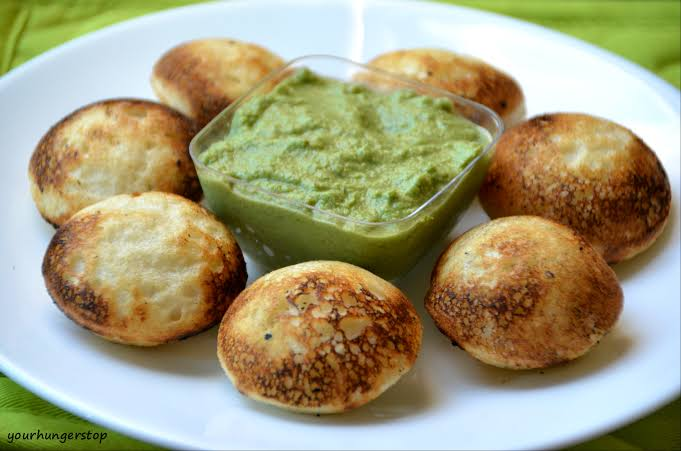

 Paddu, also known as guliappa, is a popular South Indian dish that has a rich history and a unique flavor profile. This bite-sized delicacy, often enjoyed as a snack or breakfast item, originated in the southern states of India, particularly Karnataka. The name "paddu" is derived from the Kannada language, and it is also known by different names in other South Indian languages, such as guliappa in Kannada and appe in Konkani. The history of paddu can be traced back to ancient times when traditional cooking methods involved using leftover dosa or idli batter. Resourceful cooks discovered that cooking the batter in a special pan with small, round molds produced delightful, ball-shaped snacks. Over time, paddu evolved into a distinct dish with its own variations and regional adaptations. The preparation of paddu involves a unique pan with multiple small craters, allowing the batter to form small, golden-brown balls. The batter typically consists of fermented rice and urad dal, giving the dish a light and fluffy texture. To enhance the flavor, ingredients such as finely chopped onions, green chilies, grated coconut, and curry leaves are often added. The result is a savory and slightly tangy taste that perfectly complements the crispy exterior. Paddu's versatility extends beyond its basic ingredients, as cooks often experiment with different fillings and toppings. Some variations include adding grated vegetables, paneer, or even a spicy chutney filling, adding a delightful twist to the traditional recipe. The dish is commonly served with coconut chutney, mint chutney, or tangy sambar, further enhancing its taste.
Salt, to taste (if previously not added to the batter)
Instructions
To begin making the Karnataka Style Guliappa Recipe, combine all the ingredients together for the paniyaram in a bowl. keep aside
Heat the special Paniyaram / Gundpangla Pan on medium heat. Put a few drops of oil in each cavity of the pan, so that the batter does not stick to the pan.
Spoon the batter into each of the cavities of the pan and cover the pan let the paddus cooks on medium heat, for about 7 to 10 minutes.
You will notice the top is steamed and looked cooked. When the top looks cooked, turn the paddus with help of a small spoon.
Allow it to cook uncovered for another couple of minutes. Remove from the heat and follow the same procedure with the rest of batter.
Serve Karnataka Style Guliappa Recipe (Gundponglu/Paniyaram/Paddu) with Karanataka Style Goraikai Kara Recipe (Cluster Beans Chutney Recipe) or Red Chilli Coconut Chutney Recipe (South Indian Chutney) for breakfast on evening snack with tea.
Chutney Recipe
Ingredients Required
Fresh coconut, grated (1 cup)
Green chillies (hari mirch) (2 to 3)
Ginger (adrak), crushed (1-inch piece)
Tamarind (imli) pulp (2 tsp)
Coriander leaves (hara dhania) (2 tbsp)
Split Bengal gram (chana dal), soaked for a couple of hours (1 tbsp)
Salt (to taste)
Oil (2 tsp)
Mustard seeds (sarson) (1 tsp)
Black gram (urad dal) (1 tsp)
Dry red chillies (sabut lal mirch) (2)
Asafoetida (hing) (a pinch)
Instructions
In a mixer-grinder, toss in all the ingredients (except the ones for tempering), and a little water and grind up a fine paste. Transfer the mix to a bowl.
Heat oil in a pan on a high flame and add the sarson to it. When it begins to splutter, add the urad dal, hing and lal mirch, and fry till the dal turns golden brown.
Take off the flame and immediately add to the coconut paste. Mix well and cover the bowl with a lid. Let it rest for 2 minutes to allow the flavours to seep through.
 South Indian Recipes
South Indian Recipes